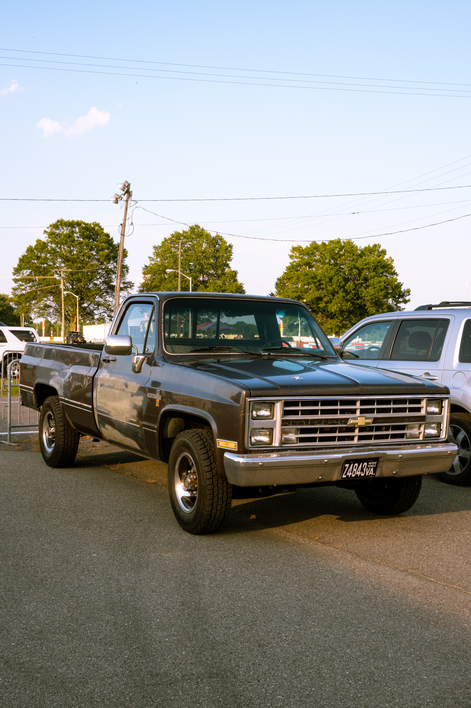

Bucket List Page
Road Trip
- My first bucket list item would be to go on a road trip on a motorcycle
- On this road trip I would like to visit National or State parks along the way
Traveling To A Drasticly Diffrent Culture
- My second bucket list item would have to be going to a different country
- The reason why would be because I want to experience a diffrent culture other than living in America or Mexico
Restoring A Classic Car

- My final bucket list item is restoring a classic car or truck
- The reason I would like to do this is because everhting is beign computerised
- Having something that just works based on a mechanical principal would be a nice reminder of how simple things used to be